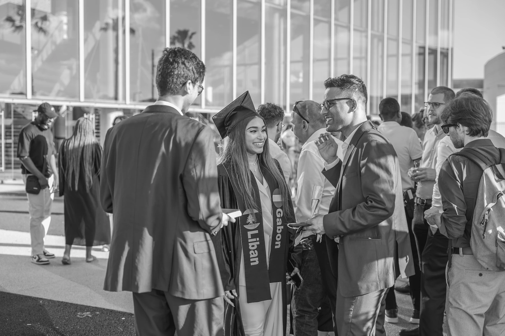
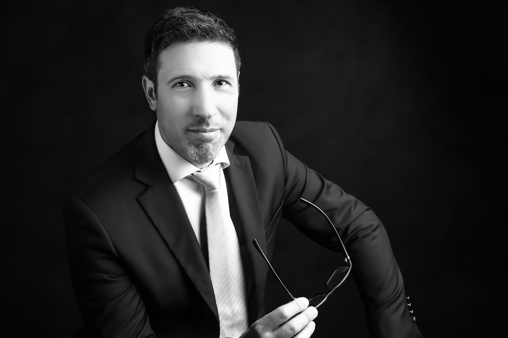

Services proposés

Événements et reportages
Des photos spontanées et authentiques pour immortaliser vos événements artistiques, sportifs ou familiaux avec sensibilité et créativité.

Photographie de mariage
Des clichés sincères et élégants qui retracent avec authenticité chaque instant de votre journée exceptionnelle.

Shooting professionnel
Des photos de qualité pour vos profils, sites web et supports de communication. Mettez votre image au service de vos projets.
Valeurs Ajoutees
Une approche humaine et poétique
pour des instants figés à jamais
- Une approche humaine et bienveillante,
pour des photos naturelles et pleines de vie - Un savoir-faire technique au service de la créativité
- Des retouches subtiles pour un rendu à la fois professionnel et authentique
- Une flexibilité totale sur les lieux et les styles de prise de vue
Galerie
Mariage d’Élodie & Maxime
Reportage photo complet, des préparatifs à la soirée, capturant les émotions et les petits détails d’une journée inoubliable.


Portraits en lumière naturelle
Une série de portraits réalisés en extérieur, jouant avec la lumière du matin pour un rendu doux et poétique.

Corporate – Équipe NovaTech
Shooting professionnel pour la communication interne et externe de l’entreprise, avec une mise en scène moderne et dynamique.